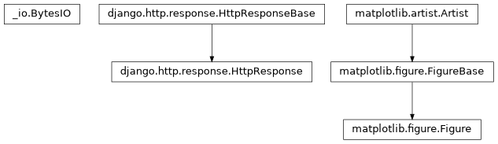

autowisp.browser_interface.diagnostics.image_diagnostics_views module
Class Inheritance Diagram

Views for displaying per-image diagnostics.
Quantities may be plotted against one another, where a quantity is a
DiagnosticType name, an expression over those, or jd. Plotting
against time is not a separate mode: it is x="jd", which resolves
through the same path as everything else because the canonical image list
already carries the Julian dates.
The figure half of the page: reading the values a row asks for, drawing
them, and the Django views that serve it. What the table above the plot
offers, and what a row binds, is series_table – which never
evaluates anything, where everything here does.
- autowisp.browser_interface.diagnostics.image_diagnostics_views.assign_y_axes(drawn, requested)[source]
Return the quantities to put on each y axis, in the order drawn.
Sharing an axis is the safe default and the usual answer: two quantities wrongly sharing one show it at once, since one of them is flattened, where two wrongly given separate axes are rescaled to fill the same height and invite a reader to compare what cannot be compared.
What a user asks for is an axis number per quantity, which is easier to say than an ordering. Turning numbers into axes is what happens here: numbers nothing drawn uses are skipped, so asking for 1 and 3 draws two axes rather than three with an empty one between them, and the number is only ever a way of grouping and ordering.
- Parameters:
drawn (iterable) – The quantities actually drawn, in section order. Repeats are ignored: a quantity is on one axis however many rows draw it.
requested (dict) –
{quantity: axis number}, as the client posts it. A quantity missing from it, or carrying something that is not a number, falls to the first axis – an unanswered question is not worth failing a plot over.
- Returns:
- One list of quantity names per axis, the first being the
host. Each list is in section order, and the axes are ordered by the number asked for. Empty when nothing is drawn.
- Return type:
- autowisp.browser_interface.diagnostics.image_diagnostics_views.build_section(section_y, *, x_quantity, expressions, descriptions, marker, db_session)[source]
Return everything one section of the page is rendered from.
A section is the table for the pair
(x, section_y), headed by what that quantity is. Its channel columns depend on the quantity it draws, which is what a section is for: quantities binding different numbers of channels cannot share one table, so each gets its own.- Parameters:
section_y (str) – The quantity this section draws.
x_quantity (str) – Quantity on the X axis, shared by the page.
expressions (dict) – The library,
{name: expression}.descriptions (dict) – What each quantity means, the recorded diagnostics’ and the expressions’ together.
marker (str) – What this section’s rows start out drawn with.
db_session – An active SQLAlchemy database session.
- Returns:
The section, as
_series_section.htmlrenders it.- Return type:
- autowisp.browser_interface.diagnostics.image_diagnostics_views.collect_series_data(series_list, x_quantity, expressions, db_session)[source]
Read the selected series, dropping those with nothing to draw.
Every row of the table is posted rather than only the drawn ones, so that the server can see what the whole table binds. Four of them are skipped here: one the user has not selected, one whose marker is blank, one still missing a channel, and one naming no session and image type – the last two naming no data to read.
- Parameters:
- Returns:
(series, x_values, y_values, image_ids)tuples for theseries having at least one point where both axes are finite.
- Return type:
- autowisp.browser_interface.diagnostics.image_diagnostics_views.create_diagnostics_figure(series_list, *, x_quantity, expressions, db_session, figure_config=None)[source]
Create the figure for the selected series, against one x quantity.
- Parameters:
series_list (list) – Every row as the client posted it back. Only those with a non-empty
markerare plotted.x_quantity (str) – Quantity on the X axis, which every series shares. What each draws against it comes from its own id.
expressions (dict) – The library,
{name: expression}.db_session – An active SQLAlchemy database session.
figure_config (dict) – Layout of the figure, defining
plot_height_frac,num_columnsandaspect_ratio.
- Returns:
The completed figure.
- Return type:
matplotlib.figure.Figure
- autowisp.browser_interface.diagnostics.image_diagnostics_views.create_figure(num_plots, plot_height_frac, aspect_ratio, num_columns)[source]
Create the figure for the diagnostics plot per given configuration.
- autowisp.browser_interface.diagnostics.image_diagnostics_views.diagnostics_section(request, x_quantity, y_quantity, expressions, expression_descriptions)[source]
Return one rendered section, for adding one without a reload.
A request of its own rather than something a redraw carries, unlike the row
+adds: a new section’s row is bound only where each of its channel columns has a single channel recorded, so on a colour camera it arrives unbound, draws nothing, and the figure is unchanged. Asking for the section alone leaves that figure alone; folding this into a redraw would rebuild it to look exactly as it already does.The markers the page’s sections already start with arrive as
taken, comma separated, since sections have come and gone in the browser since the page was built and the server cannot know otherwise which markers are still spoken for.
- autowisp.browser_interface.diagnostics.image_diagnostics_views.display_diagnostics(request, x_quantity, y_quantities, expressions, expression_descriptions)[source]
View displaying a section per y quantity, all against one x.
- Parameters:
request – The Django request.
x_quantity (str) – Quantity on the X axis. The page has one, and a user wanting a second opens another tab: everything drawn here shares it.
y_quantities (list) – What the sections draw, in the order the URL names them, which is the order they appear in and the order they take their markers in.
expressions (dict) – The library. It arrives as an argument rather than being fetched here because it comes from the browser-interface database, and keeping that out means everything in this module can be tested against a project database alone.
views.pysupplies it.expression_descriptions (dict) – What each expression is for, from the same database and passed in for the same reason. The recorded diagnostics describe themselves in the project one, and the two are merged here.
- autowisp.browser_interface.diagnostics.image_diagnostics_views.download_plot_view(request, figure_factory, session_key, **url_kwargs)[source]
Return the last-plotted figure as a PDF download.
Reads the plot configuration stored in the session by a previous call to
update_plot_view()and regenerates the figure in PDF format.- Parameters:
request – Django HTTP request.
figure_factory – Same factory used by the corresponding update view.
session_key – Session key where
update_plot_view()stored the last POST data.
- Returns:
HttpResponse with PDF content.
- autowisp.browser_interface.diagnostics.image_diagnostics_views.draw_group_on_axes(host, group, per_axis, x_offset, show_legend)[source]
Draw one night’s series, each on the axis its quantity was given.
- Parameters:
host – The subplot this night was assigned, which carries the first y axis, the x axis and the grid.
group (list) –
(series, x_values, y_values, image_ids)tuples for this night.per_axis (list) – What
assign_y_axes()returned: the quantities on each axis, the first being the host’s.x_offset (float) – Subtracted from every x value.
show_legend (bool) – Whether to draw the merged legend.
- Returns:
None
- autowisp.browser_interface.diagnostics.image_diagnostics_views.draw_merged_legend(axes)[source]
Draw one legend for a subplot, naming what every one of its axes drew.
On the topmost axis rather than the host, and gathering the handles by hand, because neither happens by itself: each axis offers only the series drawn on it, and a legend belonging to the host is painted underneath the twins that sit above it.
- Parameters:
axes (list) – The subplot’s axes, host first, as
draw_group_on_axes()built them.- Returns:
None
- autowisp.browser_interface.diagnostics.image_diagnostics_views.get_series_data(series, x_quantity, expressions, db_session)[source]
Query the paired x/y values for a single series.
Both axes are resolved in one call, which is what makes them share a query for the diagnostics they need and one symbol table, so a subexpression common to the two is evaluated once. They are returned unmasked; the single finite mask lives in
plot_image_diagnostic_series().- Parameters:
series (dict) – One row as the client posted it back, holding the id it was rendered with, and the pair and channels its dropdowns say.
x_quantity (str) – Quantity on the X axis, which the page supplies: it is the one thing a row does not choose. The y comes from the row’s own id, which names the quantity it draws.
expressions (dict) – The library,
{name: expression}, passed in rather than fetched so that nothing below the view has to know it came from the browser-interface database.db_session – An active SQLAlchemy database session.
- Returns:
(x_values, y_values, image_ids), all of equal length.- Return type:
- autowisp.browser_interface.diagnostics.image_diagnostics_views.group_series_by_x_overlap(series_data)[source]
Group series into sets whose x ranges overlap.
Series whose x ranges overlap share axes; disjoint ones get their own. For a time axis this separates observing nights, which is what it was written for. For any other quantity the ranges normally overlap, so everything collapses onto a single set of axes.
- autowisp.browser_interface.diagnostics.image_diagnostics_views.plot_image_diagnostic_series(axes, x_values, y_values, image_ids, config)[source]
Plot a single series on the given axes.
- Parameters:
axes – A matplotlib Axes to plot on.
x_values – Sequence of x coordinates.
y_values – Sequence of y coordinates.
image_ids – The image each point belongs to, used for the click-through URLs.
config (dict) – Configuration for the plotting, usually produced by
get_available_series(). Should contain keyschannel,color,marker,scale, andlabel. Amarkernaming one ofline_stylesdraws a curve instead of points, reading the scale as the line width where points read it as the marker size.
- autowisp.browser_interface.diagnostics.image_diagnostics_views.plot_session_key = 'diagnostics_last'
Where the last posted plot configuration is kept, so that the download view can regenerate exactly what was on screen.
- autowisp.browser_interface.diagnostics.image_diagnostics_views.update_plot_view(request, figure_factory, session_key=None, extra=None, **url_kwargs)[source]
Common handler for diagnostics AJAX plot-update views.
Parses the JSON POST body, calls
figure_factoryto produce the figure, and returns an SVGJsonResponse.- Parameters:
request – Django HTTP request whose body is a JSON object with a
datasetsdict (keyed by series id) and an optionalfigure_configdict.figure_factory – Callable accepting
series_list,db_session,figure_config, plus any URL kwargs as keyword arguments.session_key – If given, the posted plot configuration is stored in the session under this key so a download view can retrieve it.
extra – Optional callable given the whole POST, the database session and the URL kwargs, returning
(rows, fields): the rows to draw, and what a redraw answers besides the figure – a rebound row’s count and cells – which rides along in the response so that one action costs one round trip. It decides what is drawn as well as what is said, because a row whose binding has just changed has to be drawn with the colour and label of the binding it now has.
- Returns:
JsonResponse with
plot_datacontaining the SVG string.